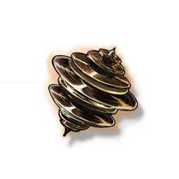

Adagio Helix
Development Materials

Medium material for weapon breakthrough and skill upgrade for characters using Rectifier.
A helix with a soft waveform, researchers can extract the stored Cadence Energy for use, but can't effectively analyze its content.